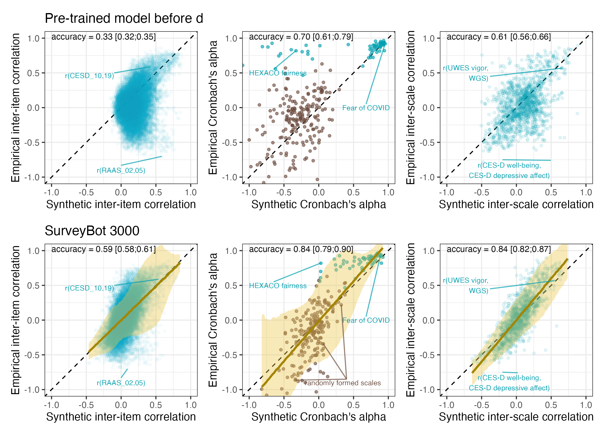

Table of contents
Registered Report Stage 1
Registered Report Stage 2: Validation Study

Main results validation
LS0tCnRpdGxlOiAiTGFuZ3VhZ2UgbW9kZWxzIGFjY3VyYXRlbHkgaW5mZXIgY29ycmVsYXRpb25zIGJldHdlZW4gcHN5Y2hvbG9naWNhbCBpdGVtcyBhbmQgc2NhbGVzIGZyb20gdGV4dCBhbG9uZSIKZGF0ZTogImByIFN5cy5EYXRlKClgIgpvdXRwdXQ6IAogIGh0bWxfZG9jdW1lbnQ6CiAgICB0b2M6IHRydWUKICAgIHRvY19mbG9hdDogdHJ1ZQogICAgY3NzOiBzdHlsZS5jc3MgCi0tLQoKIyMgVGFibGUgb2YgY29udGVudHMKCiMjIyBQaWxvdCBTdHVkeQotIFtJbXBvcnQgYW5kIHByZXBhcmUgZGF0YV0oMV92ZWN0b3JfdG9fY29zaW5lLmh0bWwpCi0gW1BpbG90IFN0dWR5IFJlc3VsdHNdKHZhbGlkYXRpb25fc3R1ZHkuaHRtbCkKICAtIFtJbnRlcmFjdGl2ZSBJdGVtIFBsb3RdKDJfaW50ZXJhY3RpdmVfaXRlbV9wbG90Lmh0bWwpCgohW01haW4gcmVzdWx0cyBwaWxvdF0oRmlndXJlX3BpbG90LnBuZykKCiMjIyBSZWdpc3RlcmVkIFJlcG9ydCBTdGFnZSAxCi0gW1JlZ2lzdGVyZWQgUmVwb3J0IFByZWNpc2lvbiBTaW11bGF0aW9uc10oM19ycl9wcmVjaXNpb25fc2ltdWxhdGlvbnMuaHRtbCkKIAojIyMgUmVnaXN0ZXJlZCBSZXBvcnQgU3RhZ2UgMjogVmFsaWRhdGlvbiBTdHVkeQotIFtJbXBvcnQgYW5kIHByZXBhcmUgZGF0YV0oMV9pbXBvcnRfdmFsaWRhdGlvbl9zdHVkeS5odG1sKQotIFtDb2RlYm9va10oY29kZWJvb2suaHRtbCkKICAtIFtEYXRhIGluIENTViBmb3JtYXRdKHJyX2RhdGEuY3N2KQogIC0gW0RhdGEgaW4gU0FWIGZvcm1hdF0ocnJfZGF0YS5zYXYpCiAgLSBbRGF0YSBpbiBSRFMgZm9ybWF0XShycl9kYXRhLnJkcykKICAtIFtEb2N1bWVudGF0aW9uIG9mIGRhdGEgY2xlYW5pbmddKGh0dHBzOi8vc3ludGgtc2NpZW5jZS5naXRodWIuaW8vc3ludGgtcmVwLykKLSBbVmFsaWRhdGlvbiBTdHVkeSBSZXN1bHRzXSh2YWxpZGF0aW9uX3N0dWR5Lmh0bWwpCiAgLSBbSW50ZXJhY3RpdmUgSXRlbSBQbG90IChSZWdpc3RlcmVkIFJlcG9ydCldKDJfaW50ZXJhY3RpdmVfaXRlbV9wbG90X3JyLmh0bWwpCiAgLSBbTWFyZ2luIG9mIGVycm9yIGNvbXBhcmlzb25dKHNlX3NhbXBsZV9zaXplLmh0bWwpCgoKIVtNYWluIHJlc3VsdHMgdmFsaWRhdGlvbl0oRmlndXJlX3JyLnBuZykK